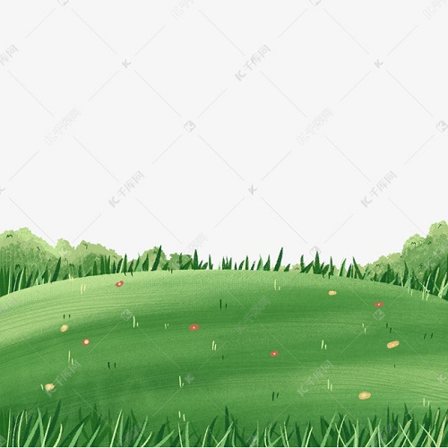
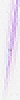

|
我们都曾拥有，也许迷茫了一会，忘记了什么......
21年中秋节回家一次,外婆还是和以前一样祥和,因为我没赶上中秋节返校的票,外婆前一天特意做了一大桌子菜,颇为感动。 |
 |
| 只有空桶才能装水,满桶反之。 |
一个打成斗战胜佛,一个得到宇宙真理。 |
|
| 新月如佳人,出海初弄色. |
| 初之美好!美好之初！
|
| |
| 我们要追回的不是过去，我们要挽回的更不是未来。我们不做圣人，不做名人，我们就是普普通通的平凡人。平庸中走不出少年,平庸中得到少年志。 |
| 因为我就是我，可以创造神一般的我，也可以创造卑微的我。 |
| 常言道:"从哪里失败，就从哪里爬起！"事实上，它就指现在，它就指当下，过去管它什么作为，未来管它什么幻想，只要大脑一个目标内心一种信念不变。既然有一个很好的开头,何不继续坚持下去呢？ |
| 栏目导航 |
| 内部：|上善若水|归途少年|白水善感||下载处| |外部链接|百度贴吧||(我对它不太感冒，不留神容易走火入魔。洗脑确实是必备的，) |
| 个人网站创作不易，请多多支持 |
|
|
| CopyRight©believe_withdral_evil_To acquire_realheart |
|